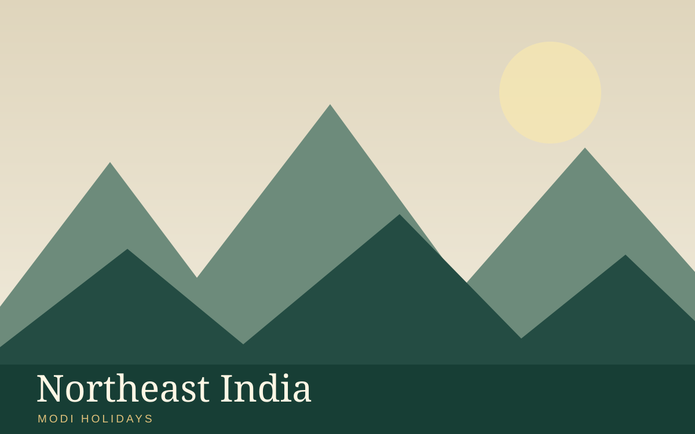

Places covered
Guwahati → Shillong → Cherrapunji → Kaziranga → Guwahati
Day-wise sightseeing itinerary
Suggested itinerary. Exact travel times, hotel availability, entry tickets and activities are confirmed in your quotation.
Day 1
Arrive in Guwahati; transfer and check in after arrival. If time permits, see Kamakhya Temple and Brahmaputra riverfront. Overnight in Guwahati.
Day 2
Travel from Guwahati to Shillong; visit Umiam Lake and Ward’s Lake. Admission, activity timings and accessibility are subject to local conditions. Overnight in Shillong.
Day 3
Travel from Shillong to Cherrapunji; visit Nohkalikai Falls and Mawsmai Cave. Admission, activity timings and accessibility are subject to local conditions. Overnight in Cherrapunji.
Day 4
Travel from Cherrapunji to Kaziranga; visit optional authorised safari (seasonal). Admission, activity timings and accessibility are subject to local conditions. Overnight in Kaziranga.
Day 5
Travel from Kaziranga to Guwahati; visit Kamakhya Temple and Brahmaputra riverfront. Admission, activity timings and accessibility are subject to local conditions. Overnight in Guwahati.
Day 6
After breakfast, check out and depart from Guwahati. Departure transfer, road timing and any onward flight or train will be confirmed in the final quotation.
Accommodation
Suggested comfort or deluxe hotels, or similar category; names confirmed with quotation
Meals and transport
Meals: Meal plan to be confirmed in your written quotation
Transport: Vehicle and transfer arrangements to be confirmed in quotation
Proposed inclusions
- Suggested itinerary and sightseeing planning
- Proposed accommodation category
- Transfer and guide options upon request
Proposed exclusions
- Flights, visas and insurance unless specified
- Entrance fees, optional activities and permits unless confirmed
- Personal expenses and meals not expressly included
Frequently asked questions
Can this tour be customised?
Yes. Dates, routing, accommodation and activities can be adjusted after enquiry.
Are hotels and departures confirmed?
No. Availability, itinerary feasibility and final inclusions require written confirmation.